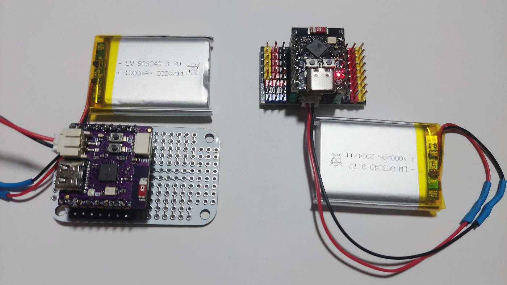
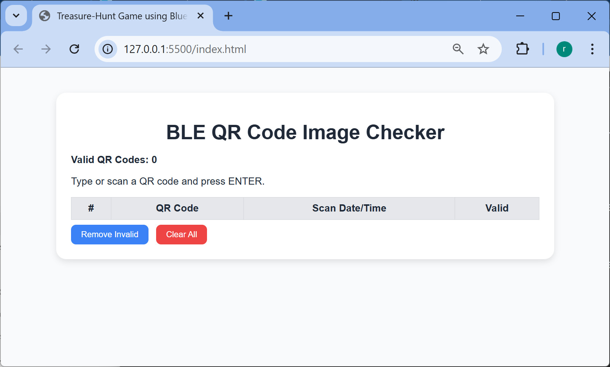
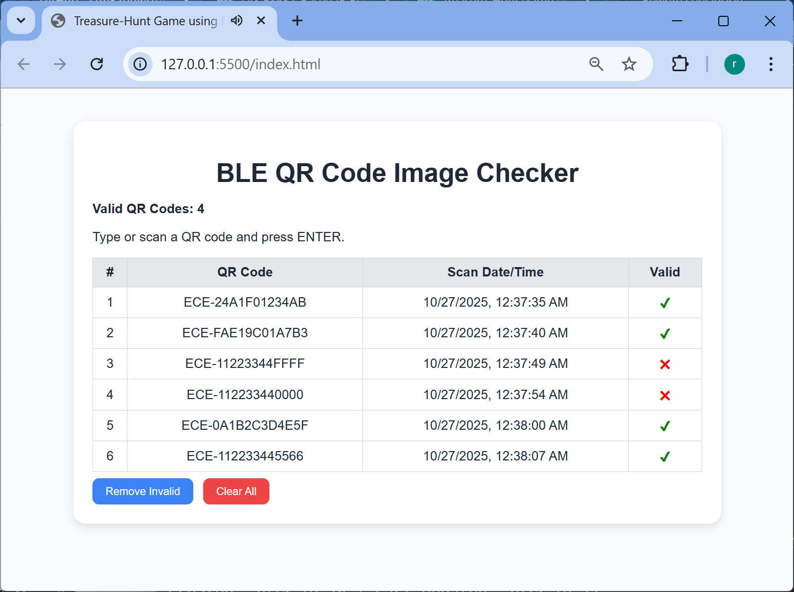
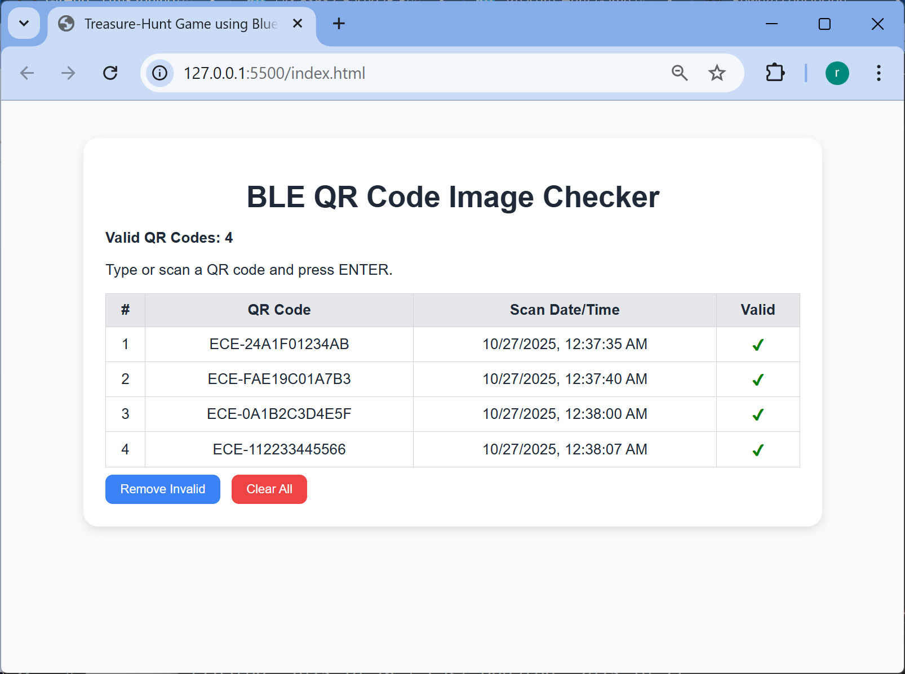
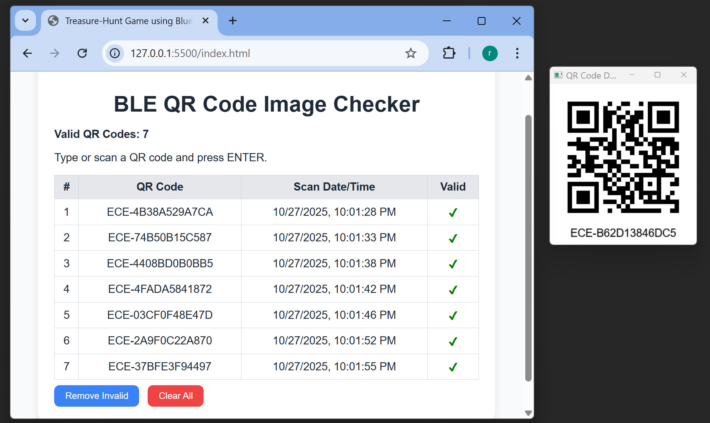
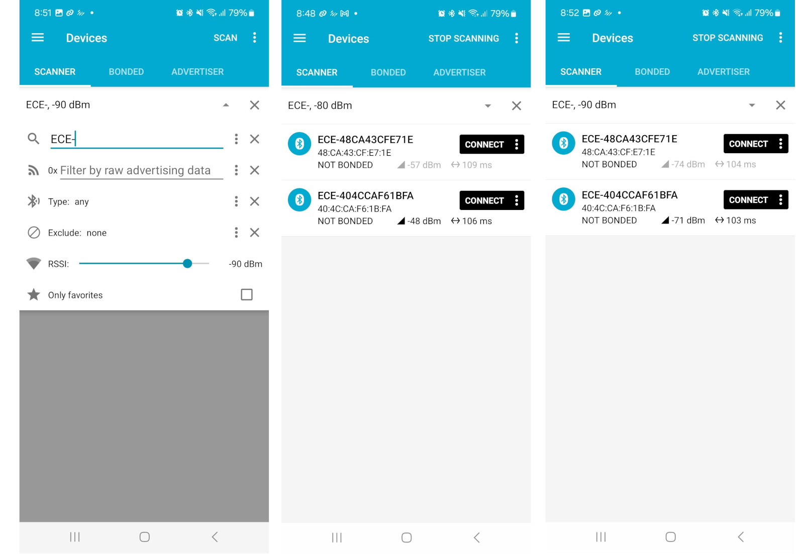
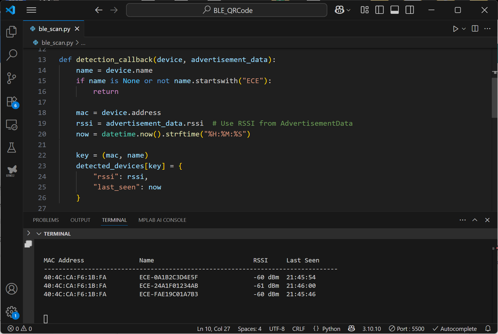

Treasure-Hunt Game using Bluetooth LE & QR Code Technologies#
Keywords: ESP32, Arduino-ESP32 Programming, Bluetooth Low Energy (BLE), QR Code
▷ Project Overview#
This is an educational treasure-hunt game designed to teach kids or students about Bluetooth Low Energy (BLE) and QR Code through interactive exploration.
Goal
- Find as many BLE beacon boxes (each with a valid QR code label) as possible.
- Once they find one, they take a photo of its QR code label on the box as proof.
- The instructor later uses a QR code scanner and the Web app developed for this game to scan the collected photos, verify the codes and score the players.
This is a hands-on learning game that teaches kids the following concepts:
- BLE advertising concepts and application of iBeacon protocol
- BLE received signal strength and proximity detection
- QR code application
▷ Game Design & Development#
-
BLE Beacon Devices
- BLE-capable microcontroller boards such as ESP32/ESP32-C3 (and other BLE-capable, Arduino-programmable MCU boards) are used for this game.
- Each device is programmed to periodically advertises iBeacon packets with a fixed UUID and a unique name like "
ECE-<Hex string>" such as "ECE-24A1F01234AB". - Each device can be powered by a rechargeable battery (LiPo 3.7V) and enclosed in a small plastic box.
-
Game Environment
- The beacon boxes are placed at different locations in lab space, or outdoor space.
- Each box has a QR code printed on it that encodes its beacon name or UUID.
-
Players
- Each player (or team) uses a Smartphone with nRF Connect app (or any BLE scanning app).
- They open the app and scan for nearby BLE beacons whose names start with the "ECE-" prefix.
- By observing the RSSI (signal strength), they can estimate how close they are to a device.
- Note: RSSI (received signal strength indication) is an approximation, affected by walls and orientation.
-
ESP32 / ESP32-C3 devices
- Arduino-ESP32 coding uses the BLE library provided by Espressif ESP-IDF.
- Note: Remove the
ArduinoBLElibrary by Arduino to avoid library conflicts.
- Note: Remove the
- Each ESP32 advertises as an iBeacon using provided Arduino code.
- Advertisement Interval = 100 ms (default)
- Power-up and deep-sleep cycle:
- Beacon starts advertising.
- LED flashes for a short time.
- The device enters deep sleep to save battery.
- BLE power level (
ESP_PWR_LVL_P9is the highest TX power) could be reduced to balance range and lifetime.
- Arduino-ESP32 coding uses the BLE library provided by Espressif ESP-IDF.
-
Using Smartphone or BLE Beacon Scanning
- Players have to install and use a BLE scanner app such as "nRF Connect" or "LightBlue Explorer" to scan BLE advertisements.
- Players manually open the BLE scanner app and keep it in the foreground. They filter by name prefix "ECE".
- As they walk around, the RSSI value increases when closer to a beacon box.
- Recommended BLE Scanning Apps:
-
QR Code Verification
- Each beacon box has a QR code label containing the beacon name.
- Players take photos as "proof of discovery".
- The game instructor later use a USB-HID QR code scanner to scan those QR codes to verify which beacons were found.
- The game instructor can use a small Python or web app to scan all QR code photos quickly and match against a known list of beacons.

Figure: Examples of ESP32-C3 modules

Figure: Web App GUI demo before any QR codes are scanned

Figure: Web App GUI Demo showing both valid and invalid QR codes

Figure: Web App GUI demo showing only valid QR codes after invalid entries are removed.
The following is the web app demo code (HTML, CSS, and JavaScript) that demonstrates the main concept of the game.
File: index.html
<!DOCTYPE html>
<html lang="en">
<head>
<meta charset="UTF-8">
<meta name="viewport" content="width=device-width, initial-scale=1.0">
<title>Treasure-Hunt Game using Bluetooth LE & QR Code</title>
<link rel="stylesheet" href="style.css">
</head>
<body>
<div class="container">
<h1>BLE QR Code Image Checker</h1>
<p id="validCount">Valid QR Codes: 0</p>
<p>Type or scan a QR code and press ENTER.</p>
<input type="text" id="hiddenInput" autocomplete="off">
<table>
<thead>
<tr>
<th>#</th>
<th>QR Code</th>
<th>Scan Date/Time</th>
<th>Valid</th>
</tr>
</thead>
<tbody id="qrTableBody"></tbody>
</table>
<button id="clearInvalidBtn" class="btn-blue">Remove Invalid</button>
<button id="clearAllBtn" class="btn-red">Clear All</button>
</div>
<script src="script.js"></script>
</body>
</html>
File: style.css
body {
font-family: Arial, sans-serif;
background-color: #f9fafb;
color: #1f2937;
padding: 2rem;
}
.container {
max-width: 750px;
margin: 0 auto;
background-color: #fff;
border-radius: 1rem;
padding: 1.5rem;
box-shadow: 0 4px 10px rgba(0, 0, 0, 0.1);
}
h1 {
text-align: center;
margin-bottom: 1rem;
}
#validCount {
font-weight: bold;
margin-bottom: 0.5rem;
}
table {
width: 100%;
border-collapse: collapse;
margin-top: 0.5rem;
}
th, td {
border: 1px solid #d1d5db;
padding: 0.5rem;
text-align: center;
}
th {
background-color: #e5e7eb;
}
.valid-mark {
color: green;
font-weight: bold;
}
.invalid-mark {
color: red;
font-weight: bold;
}
button {
padding: 0.5rem 1rem;
border: none;
border-radius: 0.5rem;
cursor: pointer;
margin-top: 0.5rem;
margin-right: 0.5rem;
color: white;
}
button:hover {
opacity: 0.9;
}
.btn-blue {
background-color: #3b82f6;
}
.btn-red {
background-color: #ef4444;
}
#hiddenInput {
position: absolute;
left: -9999px;
}
File: script.js
const scannedQRs = new Map();
const tableBody = document.getElementById('qrTableBody');
const hiddenInput = document.getElementById('hiddenInput');
const clearAllBtn = document.getElementById('clearAllBtn');
const clearInvalidBtn = document.getElementById('clearInvalidBtn');
const validCountLabel = document.getElementById('validCount');
let validQRCodes = [];
let validCount = 0;
// Load valid QR codes from JSON file
fetch('valid_codes.json')
.then(res => res.json())
.then(data => { validQRCodes = data; })
.catch(err => console.error('Failed to load valid QR codes:', err));
// Keep input focused for scanner
hiddenInput.focus();
document.addEventListener('click', () => hiddenInput.focus());
// Beep sound
function playBeep(frequency = 1000, duration = 0.1) {
const audioCtx = new (window.AudioContext || window.webkitAudioContext)();
const oscillator = audioCtx.createOscillator();
oscillator.type = 'square';
oscillator.frequency.setValueAtTime(frequency, audioCtx.currentTime);
oscillator.connect(audioCtx.destination);
oscillator.start();
oscillator.stop(audioCtx.currentTime + duration);
}
// Update row indices
function updateRowIndices() {
const rows = tableBody.querySelectorAll('tr');
rows.forEach((row, index) => row.cells[0].textContent = index + 1);
}
// Update valid count
function updateValidCount() {
validCountLabel.textContent = `Valid QR Codes: ${validCount}`;
}
// Add or update a QR code entry
function addOrUpdateRow(qr) {
const now = new Date().toLocaleString();
const isValid = validQRCodes.includes(qr);
if (scannedQRs.has(qr)) {
const row = scannedQRs.get(qr);
row.cells[2].textContent = now;
const wasValid = row.cells[3].textContent === '✔';
if (isValid) {
row.cells[3].textContent = '✔';
row.cells[3].classList.add('valid-mark');
row.cells[3].classList.remove('invalid-mark');
if (!wasValid) validCount++;
playBeep(1000, 0.1);
} else {
row.cells[3].textContent = '✖';
row.cells[3].classList.add('invalid-mark');
row.cells[3].classList.remove('valid-mark');
if (wasValid) validCount--;
playBeep(400, 0.1);
}
} else {
const row = tableBody.insertRow();
const indexCell = row.insertCell(0);
const qrCell = row.insertCell(1);
const timeCell = row.insertCell(2);
const validCell = row.insertCell(3);
qrCell.textContent = qr;
timeCell.textContent = now;
if (isValid) {
validCell.textContent = '✔';
validCell.classList.add('valid-mark');
playBeep(1000, 0.1);
validCount++;
} else {
validCell.textContent = '✖';
validCell.classList.add('invalid-mark');
playBeep(400, 0.1);
}
scannedQRs.set(qr, row);
updateRowIndices();
}
updateValidCount();
}
// Handle Enter key
hiddenInput.addEventListener('keydown', (e) => {
if (e.key === 'Enter') {
e.preventDefault();
const qr = hiddenInput.value.trim();
if (qr) addOrUpdateRow(qr);
hiddenInput.value = '';
}
});
// Handle paste
document.addEventListener('paste', (e) => {
const qr = (e.clipboardData || window.clipboardData).getData('text').trim();
if (qr) addOrUpdateRow(qr);
});
// Clear all rows
clearAllBtn.addEventListener('click', () => {
tableBody.innerHTML = '';
scannedQRs.clear();
validCount = 0;
updateValidCount();
});
// Remove invalid rows
clearInvalidBtn.addEventListener('click', () => {
const rows = Array.from(tableBody.querySelectorAll('tr'));
rows.forEach(row => {
const markCell = row.cells[3];
if (markCell.textContent === '✖') {
const qr = row.cells[1].textContent;
scannedQRs.delete(qr);
row.remove();
}
});
updateRowIndices();
updateValidCount();
});
A JSON file named valid_codes.json is also required.
This file contains a list of all valid QR codes that the web app will recognize.
A sample JSON file is shown below:
[
"ECE-24A1F01234AB",
"ECE-FAE19C01A7B3",
"ECE-0A1B2C3D4E5F",
"ECE-112233445566",
"ECE-82A15086EC9B",
"ECE-CB745B11C682",
"ECE-6F2344DF1AB9"
]
The following Python code generates a sequence of QR code images for the strings
listed in the valid_codes.json file by utilizing the qrcode,
OpenCV, NumPy and Pillow libraries.
import json
import time
import qrcode
import cv2
import numpy as np
from PIL import Image, ImageDraw, ImageFont
# Load list of valid QR codes from JSON file
with open("valid_codes.json", "r") as f:
qr_strings = json.load(f)
if not qr_strings:
print("No QR codes found in the JSON file.")
exit()
def generate_qr_image(data, box_size=5, border=4):
"""
Generate a QR code with text displayed below.
Returns the image in OpenCV format.
"""
# Create QR code
qr = qrcode.QRCode(
version=1,
error_correction=qrcode.constants.ERROR_CORRECT_H,
box_size=box_size,
border=border,
)
qr.add_data(data)
qr.make(fit=True)
qr_img = qr.make_image(fill_color="black",
back_color="white").convert("RGB")
# Load font
font_size = 2*box_size + 4
try:
font = ImageFont.truetype("arial.ttf", font_size)
except OSError:
font = ImageFont.load_default()
# Measure text size
draw = ImageDraw.Draw(qr_img)
bbox = draw.textbbox((0, 0), data, font=font)
text_width = bbox[2] - bbox[0]
text_height = bbox[3] - bbox[1]
# Create new image with extra space for text
img_width = qr_img.width
total_height = qr_img.height + text_height + 10
final_img = Image.new("RGB", (img_width, total_height), "white")
final_img.paste(qr_img, (0, 0))
# Draw centered text below QR code
draw = ImageDraw.Draw(final_img)
text_x = (img_width - text_width) // 2
text_y = qr_img.height - font_size // 2
draw.text((text_x, text_y), data, fill="black", font=font)
# Convert PIL image to OpenCV format
cv_img = cv2.cvtColor(np.array(final_img), cv2.COLOR_RGB2BGR)
return cv_img
# --- Main display loop ---
cv2.namedWindow("QR Code Display", cv2.WINDOW_AUTOSIZE)
SHOW_INTERVAL_SEC = 2
try:
print("Press ESC to exit...\n")
count = 1
while True:
for data in qr_strings:
print(f"Showing QR code {count}: {data}")
count += 1
img = generate_qr_image(data)
cv2.imshow("QR Code Display", img)
# Show image for a few seconds or until ESC is pressed
start_time = time.time()
while time.time() - start_time < SHOW_INTERVAL_SEC:
key = cv2.waitKey(100)
if key == 27: # ESC key
raise KeyboardInterrupt
except KeyboardInterrupt:
print("\nStopped by user.")
finally:
cv2.destroyAllWindows()

Figure: Generating QR code images with a Python script for testing with a USB-HID QR code scanner.
▷ Arduino-ESP32 Demo Code for iBeacon Broadcasting#
The provided Arduino code implements an ESP32-based iBeacon for the treasure-hunt game. The first version sets up a basic BLE advertisement using a fixed UUID, Major/Minor values, and device name. It continuously broadcasts iBeacon packets while the LED flashes briefly at startup, allowing players to detect the device using BLE scanner apps.
// Arduino Sketch: Demo 1
// Date: 2025-10-28
#include <BLEDevice.h>
#include <BLEBeacon.h>
#include <BLEUtils.h>
#include <BLE2902.h>
#include <BLEAdvertising.h>
#define LED_PIN (8) // onboard LED pin
//#define LED_PIN RGB_BUILTIN
#define DEVICE_NAME "ECE-"
#define BEACON_UUID "2D7A9F0C-E0E8-4CC9-A71B-A21DB2D034A1"
#define BEACON_POWER ESP_PWR_LVL_N12
// Static Major/Minor values
uint16_t STATIC_MAJOR = 1;
uint16_t STATIC_MINOR = 1;
// Helper function to process the string (uppercase and remove colons)
String formatName(String name) {
name.toUpperCase(); // Convert to uppercase
name.replace(":", ""); // Remove colons
return name;
}
void init_BLE() {
BLEDevice::init(DEVICE_NAME);
// Set the actual hardware transmit power
BLEDevice::setPower(BEACON_POWER);
// 1. Set up iBeacon Payload
BLEBeacon beacon;
beacon.setManufacturerId(0x4c00); // Apple iBeacon ID
beacon.setProximityUUID(BLEUUID(BEACON_UUID));
beacon.setMajor(STATIC_MAJOR); // Static Major
beacon.setMinor(STATIC_MINOR); // Static Minor
beacon.setSignalPower(BEACON_POWER);
// 2. Create Advertisement Data (iBeacon only)
BLEAdvertisementData advData;
advData.setFlags(0x06); // LE General Discoverable + BR/EDR Not Supported
// Add ONLY the iBeacon Manufacturer Data - NO device name
advData.setManufacturerData(beacon.getData());
// 3. Create Scan Response Data (with device name) <====
BLEAdvertisementData scanResponse;
String name = DEVICE_NAME;
name += BLEDevice::getAddress().toString();
scanResponse.setName(formatName(name).c_str());
// 4. Start Advertising
BLEAdvertising *pAdvertising = BLEDevice::getAdvertising();
pAdvertising->setMinInterval(160); // 100 ms
pAdvertising->setMaxInterval(160); // 100 ms
// Set the primary advertisement data (iBeacon)
pAdvertising->setAdvertisementData(advData);
// Set the scan response data (device name)
pAdvertising->setScanResponseData(scanResponse);
// ADV_TYPE_SCAN_IND (0x02) - Scannable undirected advertising
// This allows scan responses while remaining non-connectable
pAdvertising->setAdvertisementType(0x02);
pAdvertising->start();
// Print the BLE device address
Serial.print("BLE Device Address: ");
Serial.println(BLEDevice::getAddress().toString().c_str());
// Print the formatted name
Serial.print("Device Name: ");
Serial.println(formatName(name));
}
void setup() {
Serial.begin(115200);
pinMode(LED_PIN, OUTPUT);
for (int i = 0; i < 10; i++) {
digitalWrite(LED_PIN, !digitalRead(LED_PIN));
delay(100);
}
Serial.println("Initializing iBeacon...");
init_BLE();
Serial.println("iBeacon broadcasting...");
}
void loop() {
delay(1000); // Simple loop, no dynamic changes
}
Next, the extended version adds deep-sleep and wake-up functionality to save battery. It dynamically updates Major/Minor values based on boot count, toggles an LED for visual feedback, and controls BLE transmit power. This ensures energy-efficient beacon operation, while maintaining compatibility with BLE scanners for proximity-based treasure hunting.
// Arduino Sketch: Demo 2
// Target board: ESP32-C3 Super Mini
#include <Arduino.h>
#include <BLEDevice.h>
#include <BLEBeacon.h>
#include <BLEUtils.h>
#include <BLE2902.h>
#include <BLEAdvertising.h>
#include <esp_sleep.h>
#include <sys/time.h>
#define BTN_PIN (9) // use the onboard BOOT button
#define LED_PIN (8) // use the onboard LED
//#define LED_PIN (RGB_BUILTIN)
#define DEVICE_NAME "ECE-"
// Standard iBeacon UUID
#define BEACON_UUID "2D7A9F0C-E0E8-4CC9-A71B-A21DB2D034A1"
#define DEEP_SLEEP_DURATION_SEC 10 // sleep x seconds and then wake up
// Use the desired power level (ESP_PWR_LVL_P9 is the highest)
#define BEACON_POWER ESP_PWR_LVL_P9
RTC_DATA_ATTR static time_t last; // remember last boot in RTC Memory
RTC_DATA_ATTR static uint32_t bootcount; // remember number of boots in RTC Memory
BLEAdvertising *pAdvertising;
struct timeval now;
// Task handles for inter-task communication
static TaskHandle_t ledTaskHandle = NULL;
// Global constants
const TickType_t FLASH_DELAY_MS = pdMS_TO_TICKS(100); // 100ms between toggles
const int FLASH_COUNT_MAX = 100; // Number of times to flash
void LedToggleTask(void *pvParameters) {
int count = 0;
while (count < FLASH_COUNT_MAX) {
digitalWrite(LED_PIN, HIGH);
vTaskDelay(1);
digitalWrite(LED_PIN, LOW);
vTaskDelay(499);
count++;
}
digitalWrite(LED_PIN, LOW);
vTaskDelete(NULL);
}
// Helper function to format the advertisement name
String formatName(String name) {
name.toUpperCase(); // Convert to uppercase
name.replace(":", ""); // Remove colons
return name;
}
void setBeacon() {
// Use bootcount to set Major/Minor values
uint16_t dynamicMajor = (uint16_t)(bootcount / 10);
uint16_t dynamicMinor = (uint16_t)(bootcount % 10);
// 1. Set up iBeacon Payload-
BLEBeacon beacon;
beacon.setManufacturerId(0x4c00); // Apple iBeacon ID
beacon.setProximityUUID(BLEUUID(BEACON_UUID));
// Set dynamic Major/Minor values based on bootcount
beacon.setMajor(dynamicMajor);
beacon.setMinor(dynamicMinor);
// Transmit power setting inside the beacon frame (Informational)
// The actual hardware power is set by BLEDevice::setPower() in setup()
beacon.setSignalPower(BEACON_POWER);
// 2. Create Advertisement Data
BLEAdvertisementData advData;
advData.setFlags(0x06); // LE General Discoverable + BR/EDR Not Supported
// Create Scan Response Data (with device name)
BLEAdvertisementData scanResponse;
// Set the device name in the advertisement payload
String name = DEVICE_NAME;
name += BLEDevice::getAddress().toString();
scanResponse.setName(formatName(name).c_str());
// Add the iBeacon Manufacturer Data (this is the core iBeacon payload)
advData.setManufacturerData(beacon.getData());
// 3. Configure Advertising
pAdvertising->setMinInterval(160); // 100 ms
pAdvertising->setMaxInterval(160); // 100 ms
// Set the primary advertisement data (iBeacon)
pAdvertising->setAdvertisementData(advData);
// Set the scan response data (device name)
pAdvertising->setScanResponseData(scanResponse);
pAdvertising->setAdvertisementData(advData);
// Non-Connectable Undirected Advertising
pAdvertising->setAdvertisementType(0x02);
Serial.printf("iBeacon Major: %d, Minor: %d\n",
dynamicMajor, dynamicMinor);
}
void setup() {
Serial.begin(115200);
gettimeofday(&now, NULL);
pinMode(LED_PIN, OUTPUT);
pinMode(BTN_PIN, INPUT_PULLUP);
xTaskCreate(
LedToggleTask, // Task function
"LED_TOGGLE", // Name of task
2048, // Stack size (bytes)
NULL, // Parameter to pass
1, // Priority (0 is lowest)
&ledTaskHandle // Task handle to store
);
Serial.println("LED Toggle Task created...");
// Check the last boot time and increment bootcount
Serial.printf("Start ESP32 #%lu\n", bootcount);
Serial.printf("Deep sleep (%llds since last reset, %llds since last boot)\n",
now.tv_sec, now.tv_sec - last);
last = now.tv_sec;
// Create the BLE Device
BLEDevice::init(DEVICE_NAME);
// Set the actual hardware transmit power
BLEDevice::setPower(BEACON_POWER);
pAdvertising = BLEDevice::getAdvertising();
setBeacon();
// Start advertising
pAdvertising->start();
// Advertise for approx. 2 seconds
Serial.println("Advertising started...");
// Print the BLE device address
Serial.print("BLE Device Address: ");
String ble_mac_string = BLEDevice::getAddress().toString();
ble_mac_string.toUpperCase();
Serial.println(ble_mac_string.c_str());
delay(2000);
pAdvertising->stop();
Serial.println("Advertising stopped...");
if (ledTaskHandle != NULL && eTaskGetState(ledTaskHandle) != eDeleted) {
vTaskDelete(ledTaskHandle);
Serial.println("LED Toggle Task deleted");
}
ledTaskHandle = NULL;
// Increment bootcount for the next wake cycle and enter deep sleep
bootcount++;
if (digitalRead(BTN_PIN) == HIGH) {
Serial.println("Enter deep sleep...");
delay(100); // Give time for the Serial output to flush
esp_deep_sleep(1000000LL * DEEP_SLEEP_DURATION_SEC);
} else {
pAdvertising->start();
Serial.println("Advertising started (no deep sleep)...");
}
}
void loop() {}
The following Arduino sketch is a modified version of the previous example, enabling the ESP32 device to broadcast BLE beacons under three different beacon names.
// Arduino Sketch: Demo 3
// Target board: ESP32-C3 Super Mini
#include <Arduino.h>
#include <BLEDevice.h>
#include <BLEBeacon.h>
#include <BLEUtils.h>
#include <BLE2902.h>
#include <BLEAdvertising.h>
#include <esp_sleep.h>
#include <sys/time.h>
#define BTN_PIN (9) // use the onboard BOOT button
#define LED_PIN (8) // use the onboard LED
//#define LED_PIN (RGB_BUILTIN)
#define BEACON_UUID "2D7A9F0C-E0E8-4CC9-A71B-A21DB2D034A1" // iBeacon UUID
#define DEEP_SLEEP_DURATION_SEC 5
#define BEACON_POWER ESP_PWR_LVL_N3
#define LED_ON (LOW)
#define LED_OFF (!LED_ON)
// Beacon name list (up to 3)
const char *names[] = {
"ECE-24A1F01234AB",
"ECE-FAE19C01A7B3",
"ECE-0A1B2C3D4E5F"
};
const int NUM_NAMES = sizeof(names) / sizeof(names[0]);
// Function to convert enum to string
const char* powerLevelToString(esp_power_level_t level) {
switch (level) {
case ESP_PWR_LVL_N24: return "-24 dBm";
case ESP_PWR_LVL_N21: return "-21 dBm";
case ESP_PWR_LVL_N18: return "-18 dBm";
case ESP_PWR_LVL_N15: return "-15 dBm";
case ESP_PWR_LVL_N12: return "-12 dBm";
case ESP_PWR_LVL_N9: return "-9 dBm";
case ESP_PWR_LVL_N6: return "-6 dBm";
case ESP_PWR_LVL_N3: return "-3 dBm";
case ESP_PWR_LVL_N0: return "0 dBm";
case ESP_PWR_LVL_P3: return "+3 dBm";
case ESP_PWR_LVL_P6: return "+6 dBm";
case ESP_PWR_LVL_P9: return "+9 dBm";
case ESP_PWR_LVL_P12: return "+12 dBm";
case ESP_PWR_LVL_P15: return "+15 dBm";
case ESP_PWR_LVL_P18: return "+18 dBm";
case ESP_PWR_LVL_P20: return "+20 dBm";
default: return "Invalid Power Level";
}
};
// Store across sleep cycles
RTC_DATA_ATTR static time_t last;
RTC_DATA_ATTR static uint32_t bootcount = 0;
BLEAdvertising *pAdvertising;
struct timeval now;
// LED blink task
static TaskHandle_t ledTaskHandle = NULL;
const TickType_t FLASH_DELAY_MS = pdMS_TO_TICKS(100);
const int FLASH_COUNT_MAX = 20;
void LedToggleTask(void *pvParameters) {
int count = 0;
while (count < FLASH_COUNT_MAX) {
digitalWrite(LED_PIN, LED_ON);
vTaskDelay(5);
digitalWrite(LED_PIN, LED_OFF);
vTaskDelay(500-5);
count++;
}
digitalWrite(LED_PIN, LED_ON);
vTaskDelete(NULL);
}
void setBeacon(const char *beaconName) {
uint16_t dynamicMajor = (uint16_t)(bootcount / 10);
uint16_t dynamicMinor = (uint16_t)(bootcount % 10);
BLEBeacon beacon;
beacon.setManufacturerId(0x4c00); // Apple iBeacon ID
beacon.setProximityUUID(BLEUUID(BEACON_UUID));
beacon.setMajor(dynamicMajor);
beacon.setMinor(dynamicMinor);
beacon.setSignalPower(BEACON_POWER);
BLEAdvertisementData advData;
advData.setFlags(0x06);
// Create Scan Response Data (with device name)
BLEAdvertisementData scanResponse;
scanResponse.setName(beaconName);
advData.setManufacturerData(beacon.getData());
// Advertising rate: 160 × 0.625 ms = 100 ms
pAdvertising->setMinInterval(160);
pAdvertising->setMaxInterval(160);
// Set the primary advertisement data (iBeacon)
pAdvertising->setAdvertisementData(advData);
// Set the scan response data (device name)
pAdvertising->setScanResponseData(scanResponse);
// ADV_TYPE_SCAN_IND (0x02) - Scannable undirected advertising
// This allows scan responses while remaining non-connectable
pAdvertising->setAdvertisementType(0x02);
Serial.printf("Broadcasting beacon: %s (Major=%d, Minor=%d)\n",
beaconName, dynamicMajor, dynamicMinor);
}
void setup() {
Serial.begin(115200);
pinMode(LED_PIN, OUTPUT);
pinMode(BTN_PIN, INPUT_PULLUP);
gettimeofday(&now, NULL);
xTaskCreate(LedToggleTask, "LED_TOGGLE", 2048, NULL, 1, &ledTaskHandle);
Serial.println("LED Toggle Task created...");
Serial.printf("Start ESP32 #%lu\n", bootcount);
Serial.printf("Deep sleep (%llds since last reset, %llds since last boot)\n",
now.tv_sec, now.tv_sec - last);
last = now.tv_sec;
// Select beacon name based on bootcount
int index = bootcount % NUM_NAMES;
const char *currentName = names[index];
Serial.printf("Selected beacon name: %s\n", currentName);
// Initialize BLE
BLEDevice::init(currentName);
BLEDevice::setPower(BEACON_POWER);
pAdvertising = BLEDevice::getAdvertising();
// Configure and start beacon advertising
setBeacon(currentName);
pAdvertising->start();
Serial.println("Advertising started...");
delay(2000);
pAdvertising->stop();
Serial.println("Advertising stopped...");
// Stop LED task
if (ledTaskHandle != NULL && eTaskGetState(ledTaskHandle) != eDeleted) {
vTaskDelete(ledTaskHandle);
Serial.println("LED Toggle Task deleted");
}
ledTaskHandle = NULL;
// Increment bootcount
bootcount++;
if (digitalRead(BTN_PIN) == HIGH) { // Button is not pressed.
// Enter deep sleep
Serial.println("Entering deep sleep...");
delay(100);
esp_deep_sleep(1000000LL * DEEP_SLEEP_DURATION_SEC);
} else {
Serial.println("Exit the wakeup and deep-sleep cycle...");
}
}
void loop() {
Serial.printf("\nCompiled on: %s at %s\n",__DATE__, __TIME__);
Serial.printf("Chip model: %s\n", ESP.getChipModel());
String mac = BLEDevice::getAddress().toString();
mac.toUpperCase();
Serial.printf("BLE MAC: %s\n", mac.c_str() );
Serial.printf("TX power: %s\n", powerLevelToString(BEACON_POWER) );
for (int i=0; i < NUM_NAMES; i++) {
Serial.printf( "%d) Beacon name: '%s'\n", i+1, names[i]);
}
delay(5000);
}
The following figures show screenshots from the nRF Connect app on an Android smartphone, used to scan BLE beacons with name filtering. The screenshots display nearby BLE beacons, where the RSSI values in dBm indicate the approximate distance between the smartphone and each BLE box. As the smartphone moves closer to a BLE box, the RSSI value increases.

Figure: Using nRF Connect App to scan BLE beacons
The following Python code can be used to scan BLE beacons. It utilizes the Bleak library (version 0.22.2) for this purpose.
import asyncio
from bleak import BleakScanner
from datetime import datetime
import importlib.metadata
version = importlib.metadata.version("bleak")
print("\n\n\n\nBleak version:", version)
SCAN_INTERVAL_SEC = 5
# Dictionary to store detected devices:
# { (MAC, Name): {"rssi": int, "last_seen": str} }
detected_devices = {}
def detection_callback(device, advertisement_data):
name = device.name
if name is None or not name.startswith("ECE"):
return
mac = device.address
rssi = advertisement_data.rssi # Use RSSI from AdvertisementData
now = datetime.now().strftime("%H:%M:%S")
key = (mac, name)
detected_devices[key] = {
"rssi": rssi,
"last_seen": now
}
async def main():
scanner = BleakScanner(detection_callback)
print("Scanning for BLE devices (Press Ctrl+C to stop)...\n")
await scanner.start()
try:
while True:
await asyncio.sleep( SCAN_INTERVAL_SEC )
print(f"{'MAC Address':<25} {'Name':<30} {'RSSI':<8} {'Last Seen'}")
print("-" * 80)
for (mac, name), info in sorted(detected_devices.items()):
rssi_str = f"{info['rssi']} dBm" if info['rssi'] is not None else "N/A"
print(f"{mac:<25} {name:<30} {rssi_str:<8} {info['last_seen']}")
print("\n")
except KeyboardInterrupt:
await scanner.stop()
print("\nScan stopped by user.")
if __name__ == "__main__":
asyncio.run(main())

Figure: Running the Python script to scan and filter BLE beacons.
▷ Conclusion#
This project provides a fun, hands-on way to learn about Bluetooth Low Energy and QR code technologies using affordable hardware like the ESP32. Through interactive exploration, students gain practical experience with BLE advertising, signal strength analysis, and QR code applications, making it an effective and engaging educational tool for introducing IoT concepts.
This work is licensed under a Creative Commons Attribution-ShareAlike 4.0 International License.
Created: 2025-10-26 | Last Updated: 2025-10-29